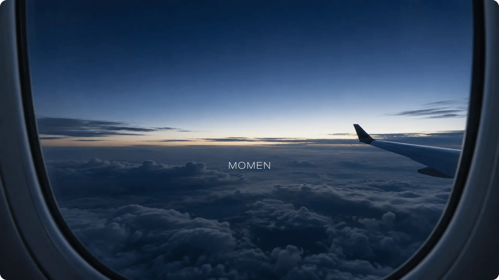

비행기 안과 밖의 모든 시간을, 하나의 여정으로
MOMEN
MOMEN은 좌석에 앉는 순간부터 여행지에 도착한 이후까지, 비행기 안과 밖의 모든 시간을 하나의 여정으로 잇는 항공사 IFE 서비스입니다.
정해진 기능을 오가는 기존 IFE와 달리, 승객의 시간과 상황에 맞춰 필요한 경험이 자연스럽게 이어지도록 설계했습니다. 탑승 전부터 이륙, 기내, 착륙 이후까지 하나의 흐름으로 이어지는 경험을 목표로 했습니다.

비행기 안과 밖의 모든 시간을, 하나의 여정으로
MOMEN은 좌석에 앉는 순간부터 여행지에 도착한 이후까지, 비행기 안과 밖의 모든 시간을 하나의 여정으로 잇는 항공사 IFE 서비스입니다.
정해진 기능을 오가는 기존 IFE와 달리, 승객의 시간과 상황에 맞춰 필요한 경험이 자연스럽게 이어지도록 설계했습니다. 탑승 전부터 이륙, 기내, 착륙 이후까지 하나의 흐름으로 이어지는 경험을 목표로 했습니다.